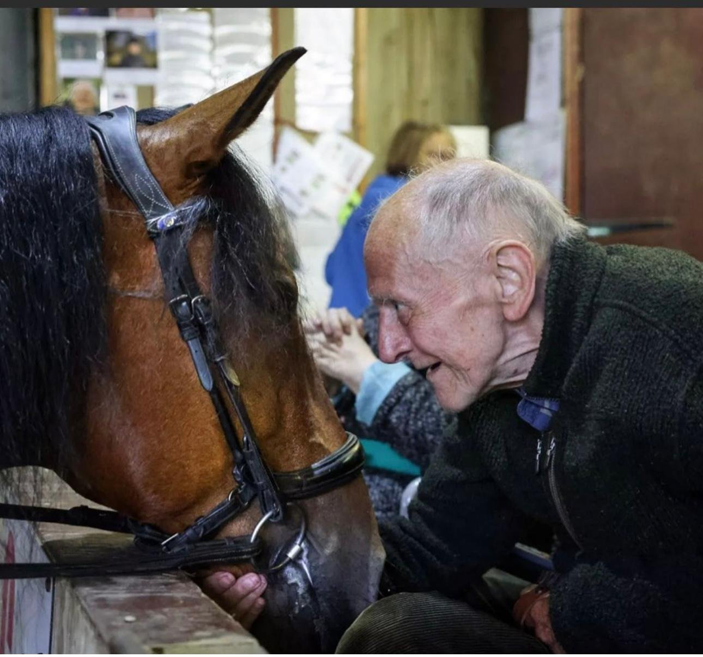
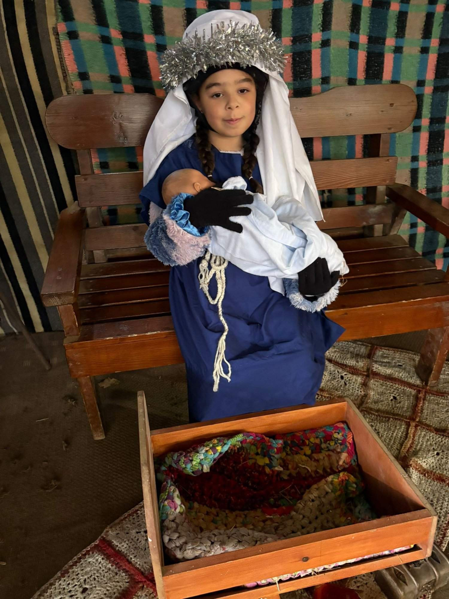

RDA Riding Lessons
Therapeutic and confidence-building riding sessions for children and adults with disabilities, led by trained coaches and supported by dedicated volunteers.
Find out more →
Where horses change lives — riding lessons, hacks, pony parties and so much more in the heart of Cornwall.
What we offer
From specialist RDA sessions to pony parties and community outreach, there is a warm welcome for everyone at Old Mill Stables.
Therapeutic and confidence-building riding sessions for children and adults with disabilities, led by trained coaches and supported by dedicated volunteers.
Find out more →
Explore the beautiful Cornish countryside on horseback with our escorted hacks — suitable for a range of abilities with our patient and knowledgeable team.
Find out more →
Magical pony parties for children, plus seasonal events throughout the year including our popular Christmas celebration — memories to last a lifetime.
Find out more →
Our heartwarming outreach sessions for elderly and care home residents — enjoy a cuppa and gentle interaction with our ponies. Featured in the local press!
Find out more →Our story
Old Mill Stables in Lelant Downs has been a place of connection, therapy and joy for our community for many years. As the home of the Riding for the Disabled South West Cornwall Group, we are dedicated to making the magic of horses accessible to everyone.
Horses have an extraordinary ability to reach people in ways that nothing else can — our riders, from young children to elderly care home visitors, leave with smiles on their faces and a bond that words cannot describe.
Our team of coaches, volunteers and dedicated ponies work together to ensure every session is safe, supportive and genuinely life-enriching.
Our RDA story
We are a proud affiliated group of the RDA — the national charity that enables people with disabilities to benefit from the physical and mental wellbeing benefits of horses and riding. Our group has been bringing this life-changing experience to people across South West Cornwall.
About the RDA →Gallery



In the news
Our “Tea with a Pony” initiative caught the hearts of local journalists and the wider community when care home residents came to visit and enjoy a cuppa alongside our gentle ponies.
The sessions were launched so that elderly residents could experience the joy and calming benefits of interacting with animals — and the results have been wonderful. The smiles say it all.
We continue to welcome care homes, supported living groups and community organisations for bespoke visits. Get in touch to arrange a visit.
About Tea with a Pony